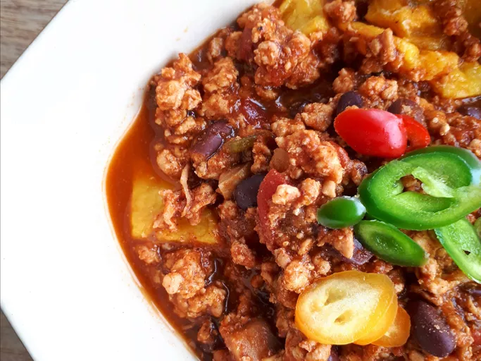

Pumpkin Turkey Chilli

Pumpkin turkey chilli on a dish
This turkey pumpkin chili is absolutely delicious. It's quick and easy, too!
Ingredients
- 1 table spoon vegetable oil
- 1 cup chopped onion
- ½ cup chopped green bell pepper
- ½ cup chopped yellow bell pepper
- 1 cloved garlic, minced
- 1 pound ground turkey
- 1(14.5) can diced tomatoes
- 2 cups pumpkin puree
- 1 ½ tablespoon chilli powder or more to more taste
- ½ teaspoon ground black pepper
- 1 dash salt
- ½ cup shredded Cheddar chesse
- ½ cup sour cream
Steps
- Heat oil in a large skillet over medium heat. Add onion, green bell pepper, yellow bell pepper, and garlic; cook and stir until tender.
- Stir in turkey and cook until evenly brown; drain.
- Mix in tomatoes and pumpkin. Season with chili powder, pepper, and salt. Reduce heat to low, cover, and simmer 15 to 20 minutes. Serve topped with Cheddar cheese and sour cream.